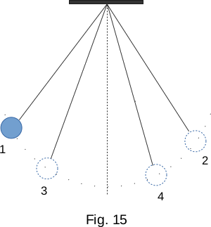

From the Heat phenomena
19. Irreversibility processes in nature
A huge set of processes, quite acceptable from the point of view of the law of energy conservation, however, never proceeds in reality. For example, heated bodies cool down by themselves, transferring their energy to colder surrounding bodies. The reverse process of heat transfer from a cold body to a hot one does not contradict the law of energy conservation, but actually does not occur.
Another example. The oscillations of the pendulum, which is out of balance, attenuate (Fig. 15. 2, 3, 4 - sequential positions of the pendulum at maximum deviations from the equilibrium position). Friction forces reduce mechanical energy and slightly increase the temperature of the pendulum and surrounding air. The reverse process is also acceptable, when the amplitude of the pendulum oscillation is increased by cooling the pendulum itself and the environment. But this process is never observed. Mechanical energy spontaneously transfers into internal energy, but not vice versa. At the same time, the ordered movement of the body as a whole turns into a disordered heat motion of the composed molecules.
The number of such examples is almost unlimited. All of them show that the processes in nature have a certain direction, which is not reflected in the first law of thermodynamics. Essentially, all processes in nature proceed only in one certain direction. In the opposite direction they cannot flow spontaneously. All processes in nature are irreversible, and the most tragic of them are aging and death of organisms.
Let's clarify the concept of an irreversible process. The irreversible process can be called such a process, the reverse of which can occur only as one element of a more complex process. For example, returning to the pendulum, you can increase the amplitude of the pendulum by pushing it by hand. But this increase in amplitude does not occur by itself, but is possible as a result of a more complex process involving a push with the hand. It is possible to transfer heat from a cold body to a hot one. But this requires an energy-consuming refrigeration unit, and so on.
A good illustration of the irreversibility of phenomena in nature is watching a movie in the opposite direction. For example, a dive into the water will look like this. The calm water in the pool begins to bubble, the legs appear, rapidly moving upwards, and then the entire diver. The surface of the water quickly calms down. Gradually, the speed of the diver decreases, and now he is quietly standing on the tower. What we see on the screen could actually happen if the processes could be reversed. The "absurdity" of what is happening results from the fact that we are used to a certain direction of processes and have no doubts about the impossibility of their reverse flow. But such a process as the lifting of the diver to the tower out of the water does not contradict neither the law of energy conservation, nor the laws of mechanics, nor any laws in general, except for the second law of thermodynamics, which we will formulate in the next paragraph.
To sum up, the processes in nature are irreversible. The most typical irreversible processes are:
1 - heat transfer from hot to cold body;
2 - transition of mechanical energy to internal energy.
Many processes are considered as reversible. But this can only be done approximately, realizing that, strictly speaking, there are no reversible processes with macroscopic bodies.